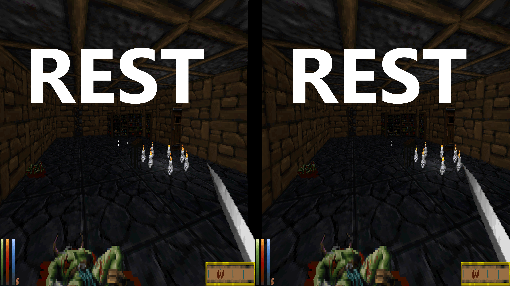
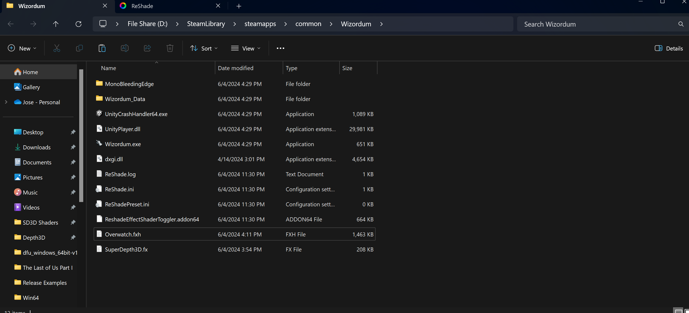
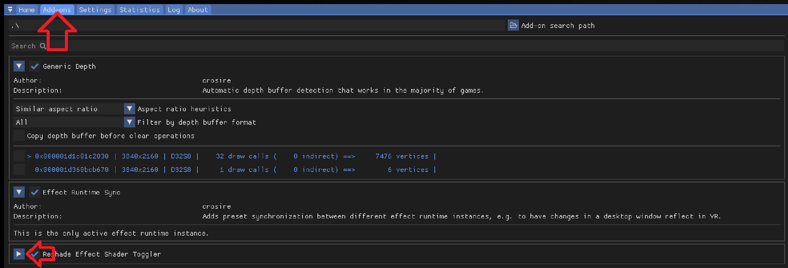
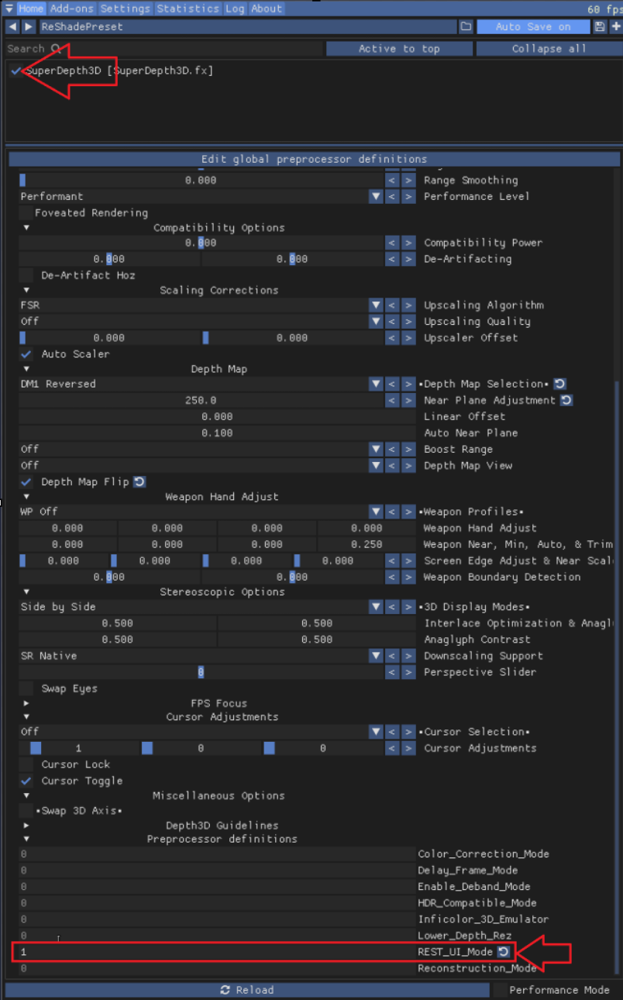
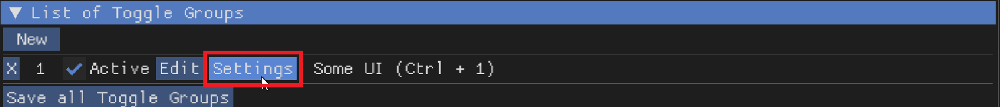
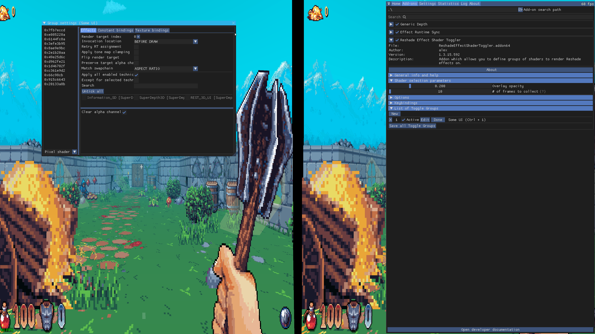
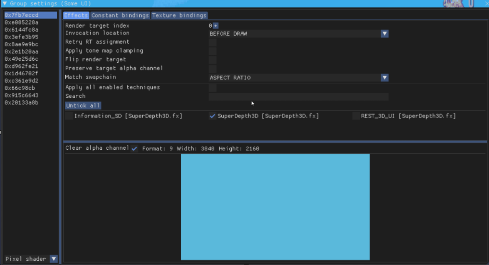
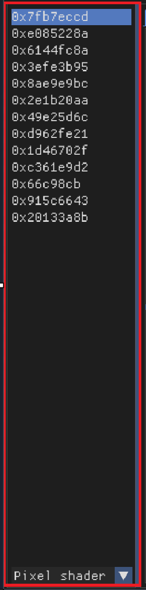
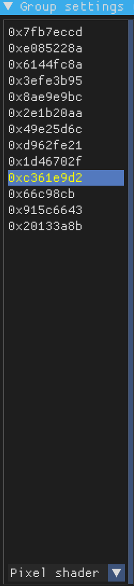
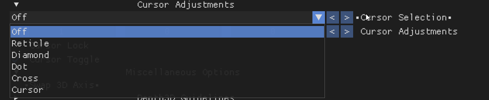

Reshade Effect Shader Toggler (R.E.S.T)¶
The Reshade Effect Shader Toggler (R.E.S.T) is a powerful tool that lets you separate game effects and apply ReShade shaders to specific parts of the game.

Screenshot of the Reshade Effect Shader Toggler add-on.¶
Introduction¶
To begin using R.E.S.T, you need to download the add-on from its official GitHub page.
Downloading and Installing the Add-on¶
The release folder contains several files, like shaders, FX files, a license, and a README. You can ignore the license and README files for now. You’ll need to use one of the .addon# files; you can drag both into the same folder where your ReShade.dll is. This guide will focus on the 64-bit add-on.
Installing the Add-on¶
Put the ReshadeEffectShaderToggler.addon64 file in the same place where you installed ReShade. This is usually in your game’s folder, next to the dxgi.dll file.
Choosing a Game¶
For this guide, we will use the game Wiz⊙rdum. However, you can use R.E.S.T with other games as well.
Setting Up the Add-on¶
Your game folder should look like this:

Screenshot of the game folder with the add-on installed.¶
Make sure ReShade is installed and the add-on file is in the correct spot.
Launching the Game and Add-on¶
Start the game. ReShade should load with the add-on active. You can find the add-on in the Add-on Tab:

Screenshot of the ReShade add-on tab.¶
Click the arrow to open the add-on, and close other add-ons to make it easier to see.
Configuring the Add-on¶
The add-on menu should look like this:

Screenshot of the opened add-on configuration menu.¶
Close the ReShade menu and go back into the game to use the add-on.
Setting Up the Add-on in-game¶
Open ReShade, move it to the right, and click New.

Screenshot showing the New button in the ReShade menu.¶

Screenshot of the new window that appears.¶
A new window will open

Screenshot of the add-on configuration window.¶
Follow These Steps
Click Activate [x] (to turn it on)
Click Edit
Type a name in the Name field
Create a Shortcut (a key combination to quickly use it)
Click OK
Enabling 3D Shader¶
If you want to use SuperDepth3D with R.E.S.T, you need to turn on the 3D shader. Open the main menu, enable the 3D shader, and scroll to the very bottom of the shader settings. Set REST_UI_MODE to 1 to enable it:

Screenshot of the shader settings showing REST_UI_MODE.¶
Configuring the Add-on Settings¶
Go back to the Add-on Tab and click Settings:

Screenshot of the “Settings” button.¶
A new window will open

Screenshot of the add-on settings window.¶
Follow These Steps
Uncheck Apply all enabled techniques [ ]
Check the 3D shader [x]

Screenshot of the settings after marking the 3D shader.¶
Isolating the UI¶
Look at the list of active buffers:

Screenshot of the active buffers list.¶
Find the buffer that controls the UI. Double-click its hex value to select it:

Screenshot of a selected hex value.¶
The selected buffer should turn yellow.
Saving Your Progress¶
Close the window and click Save all Toggle Groups to save your changes:

Screenshot of the “Save all Toggle Groups” button.¶
Troubleshooting¶
You might see problems with the center crosshair. Here are three ways to fix this:
See if the game lets you remove it.
Use the ShaderToggler.
Change the game files (mod) to remove the texture.
Cursor Adjustments¶
If your cursor has issues in Side by Side and Top n Bottom modes, go to Shader Settings and find Cursor Adjustments:

Screenshot of the “Cursor Adjustments” menu.¶
Choose your preferred cursor type:

Screenshot of the cursor type options.¶
You can press Mouse 5 to switch between layers.